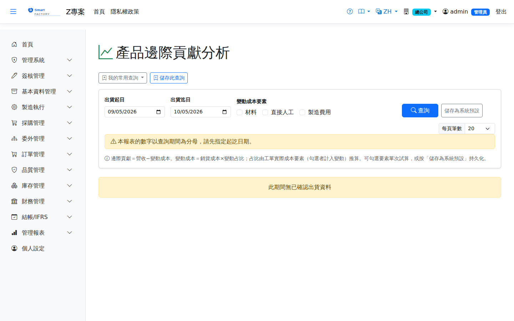

產品邊際貢獻分析Product Contribution Margin
以工單實際成本要素推算各產品變動成本占比（預設材料＋人工為變動、製費為固定，分類存系統參數可調整），計算邊際貢獻與貢獻率，輔助訂價與產品組合決策。期間內無工單成本要素的產品以整體平均占比估算並標記。Estimates the variable cost proportion of each product from the work order actual cost elements (material and labour are variable by default and overhead fixed, with the classification held in a system parameter that can be changed), and calculates the contribution and contribution rate as input to pricing and product mix decisions. Products with no work order cost elements in the period are estimated at the overall average proportion and flagged.

查詢Search
欄位說明Field reference
查詢條件Query criteria
| 條件Condition | 說明Guide |
|---|---|
| 出貨起日 / 出貨迄日Shipped from / to | 必填Required 納入統計的出貨日期區間，不可留白（留白時畫面會直接說明，不會靜默回空報表）The shipment date range included; it cannot be left blank — leaving it blank now says so on screen instead of silently returning an empty report |
| 變動成本要素Variable Cost Elements | 勾選材料／直接人工／製造費用中哪些視為變動成本；勾選組合直接改變邊際貢獻的口徑Tick which of material, direct labour and overhead count as variable cost; the combination you tick changes the basis of the contribution figure directly |
報表欄位Report fields
| 欄位Field | 說明Guide |
|---|---|
| 品號 / 品名Product | 分析對象Subject of the analysis |
| 營收Revenue | 區間內該品號的銷貨收入合計Total sales revenue for the item in the period |
| 銷貨成本Cost of goods sold | 對應的出庫成本合計Total matching issue cost |
| 變動占比Var % | 銷貨成本中被視為變動的比例，依工單實際成本的料／工／費要素結構推算The proportion of the cost of goods sold treated as variable, derived from the material, labour and overhead structure of the work order actual cost |
| 變動成本Variable Cost | 銷貨成本 × 變動占比Cost of goods sold × variable proportion |
| 邊際貢獻Contribution | 營收 － 變動成本，即該品號可用於回收固定成本的金額Revenue − variable cost, i.e. what the item leaves to cover fixed costs |
| 貢獻率CM % | 邊際貢獻 ÷ 營收；接單取捨與產品組合決策時比毛利率更貼近增量效益Contribution ÷ revenue; when deciding which orders to take and how to mix products it reflects the incremental benefit better than the margin rate |
變動成本要素的分類存於系統參數，可依管理政策調整；本報表不影響 AVCO 存貨成本。The classification of the variable cost elements is held in a system parameter and can be changed to suit your policy; this report does not affect the AVCO inventory cost.
相關畫面Related screens
多維度銷售毛利分析Multi-dimensional sales margin analysis、工單成本差異WO Cost Variance